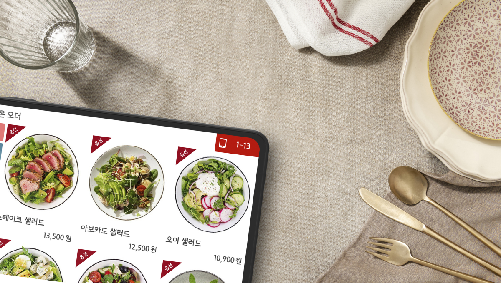
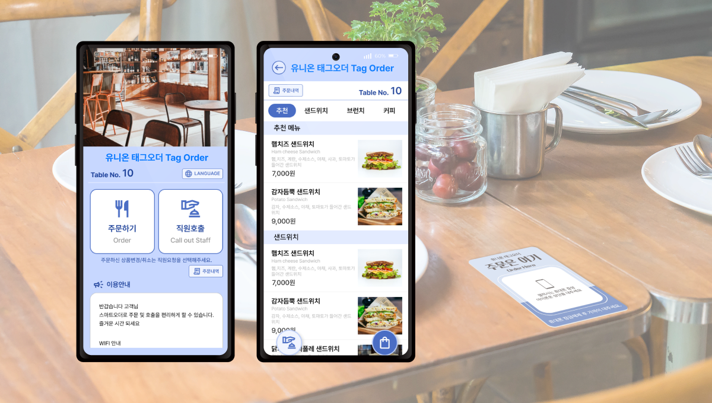

메뉴와 주문 환경을 준비하고
메뉴 설정, 기기 상태와 품절 관리. 매장에 맞는 주문 환경을 준비하는 일에서 하루가 시작됩니다.
손님을 맞이하는 주문부터 메뉴를 완성하는 식재료까지.
유니온소프트의 매장 솔루션과 유니온상회의 장보기를
사장님의 하루라는 하나의 관점으로 살펴봅니다.

유니온소프트는 POS, 키오스크, 태블릿오더와 QR/NFC 주문 솔루션을 소개합니다. 손님이 주문하는 장소와 방식은 달라도, 매장에서는 흐름이 끊기지 않도록 관리하는 일이 중요합니다.
메뉴 설정, 기기 상태와 품절 관리. 매장에 맞는 주문 환경을 준비하는 일에서 하루가 시작됩니다.
입구의 키오스크, 테이블의 태블릿, 손님의 휴대폰. 공간과 고객 동선에 어울리는 선택지를 생각합니다.
맛을 이어가는 또 하나의 기본은 식재료입니다. 유니온상회에서 매장에 필요한 품목을 살펴볼 수 있습니다.
매장 규모와 고객 동선에 맞춰 선택하세요.
기능·지원 범위와 도입 조건은 공식 상담에서 확인합니다.

손님은 직접 주문하고,
매장은 주문과 호출을 관리하고.
고객이 직접 주문·결제하는 키오스크 솔루션입니다. 공식 사이트는 POS 고객 호출, 카카오 알림톡 호출, 진동벨 디스펜서 연동과 DID 대기번호 표시를 안내합니다.
호출 방식과 연동 범위는 설치 환경·선택 장비에 따라 확인이 필요합니다.
테이블의 주문을,
POS에서 더 가깝게 관리하세요.
공식 소개에 따르면 POS·유니온오더·ASP 연동 방식으로 메뉴를 설정하고, 태블릿 상태와 주문 기능을 제어합니다. 품절·제외 관리를 POS에서 처리할 수 있도록 안내합니다.
전원 제어·시스템 락은 공식 안내상 유니온 태블릿 사용 조건이 있습니다.

태그하거나 스캔하면,
손 안에서 시작되는 주문.
NFC 태그 또는 QR 스캔으로 주문하는 방식입니다. 공식 사이트는 앱 설치·로그인 없이 이용하는 주문 경험과 주문 가능 거리 설정, 간편한 태그 등록·교체를 설명합니다.
기기 호환·위치 권한·통신 환경 및 실제 주문 가능 조건은 도입 전 확인합니다.
포장용기부터 농산·축산·수산, 양념·가공식품까지.
유니온상회는 매장에 필요한 식자재와 필수품을 살펴보는 B2B 장보기 공간입니다. 재료를 고르는 일도 정돈된 경험으로 준비합니다.
소개 페이지에서 두 서비스의 이용 흐름을 함께 제안합니다. POS 주문 데이터와 식자재 자동 발주·재고 연동은 확인된 기능이 아니며, 본 시안에서 구현하지 않았습니다.

어떤 장비가 가장 좋은지보다, 어디에서 어떻게 주문을 받는지가 먼저입니다. 공식 소개와 상담으로 지원 범위와 실제 도입 조건을 확인하세요.
카운터와 대기 공간의 흐름을 고려한다면 키오스크 주문과 고객 호출 방식을 살펴보세요.
키오스크 살펴보기 ↗테이블 주문이 중심이라면 유니온오더의 메뉴 설정과 POS 기반 상태·품절 관리 기능을 확인하세요.
유니온오더 살펴보기 ↗별도 태블릿 대신 손님의 휴대폰을 활용하고 싶다면 QR/NFC 스마트오더의 설치·운영 조건을 확인하세요.
스마트오더 살펴보기 ↗POS 호환, 선택 장비, 지원 기능, 요금과 설치 조건은 유니온소프트 공식 문의에서 확인합니다. 이 리뉴얼 시안은 상담 정보를 수집하거나 구매·신청을 전송하지 않습니다.